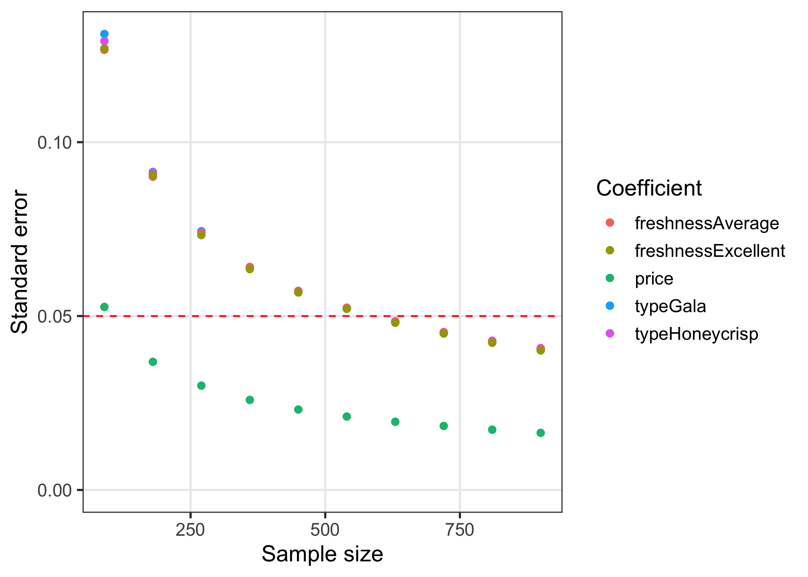

This package contains tools for designing surveys and conducting power analyses for choice based conjoint survey experiments in R.
Installation
The current version is not yet on CRAN, but you can install it from Github using the {remotes} library:
# install.packages("remotes")
remotes::install_github("jhelvy/cbcTools")Load the library with:
Make survey designs
The first step in designing an experiment is to define the attributes and levels for your experiment. Many of the functions in {cbcTools} are more convenient to use if you define these as a separate object. For example, let’s say you’re designing a conjoint experiment about apples. You might have the following attributes and levels:
levels <- list(
price = seq(1, 4, 0.5), # $ per pound
type = c('Fuji', 'Gala', 'Honeycrisp'),
freshness = c('Excellent', 'Average', 'Poor')
)With these levels defined, you can then obtain all of the profiles of each possible combination of the attributes and levels using the cbc_profiles() function:
profiles <- cbc_profiles(levels)
head(profiles)
#> profileID price type freshness
#> 1 1 1.0 Fuji Excellent
#> 2 2 1.5 Fuji Excellent
#> 3 3 2.0 Fuji Excellent
#> 4 4 2.5 Fuji Excellent
#> 5 5 3.0 Fuji Excellent
#> 6 6 3.5 Fuji ExcellentDepending on the context of your survey, you may wish to eliminate or modify some profiles before designing your conjoint survey (e.g., some profile combinations may be illogical or unrealistic), though doing so could significantly impact your ability to identify effects. As a result, it is recommended that you avoid eliminating profiles if possible.
If you do wish to set some levels conditional on those of other attributes, you can do so by setting each level of an attribute to another list that defines these constraints. In the example below, the type attribute has constraints such that only certain price levels will be shown for each level. In addition, for the "Honeycrisp" level, only two of the three freshness levels are included: "Excellent" and "Average". Note that both the other attributes (price and freshness) should contain all of the possible levels:
levels <- list(
price = c(1, 1.5, 2, 2.5, 3, 3.5, 4, 4.5, 5),
freshness = c("Excellent", "Average", "Poor"),
type = list(
"Fuji" = list(
price = c(2, 2.5, 3)
),
"Gala" = list(
price = c(1, 1.5, 2)
),
"Honeycrisp" = list(
price = c(2.5, 3, 3.5, 4, 4.5, 5),
freshness = c("Excellent", "Average")
)
)
)When these levels are used, you can see that the results set of profiles contains these constraints:
profiles <- cbc_profiles(levels)
profiles
#> profileID price freshness type
#> 1 1 2.0 Excellent Fuji
#> 2 2 2.5 Excellent Fuji
#> 3 3 3.0 Excellent Fuji
#> 4 4 2.0 Average Fuji
#> 5 5 2.5 Average Fuji
#> 6 6 3.0 Average Fuji
#> 7 7 2.0 Poor Fuji
#> 8 8 2.5 Poor Fuji
#> 9 9 3.0 Poor Fuji
#> 10 10 1.0 Excellent Gala
#> 11 11 1.5 Excellent Gala
#> 12 12 2.0 Excellent Gala
#> 13 13 1.0 Average Gala
#> 14 14 1.5 Average Gala
#> 15 15 2.0 Average Gala
#> 16 16 1.0 Poor Gala
#> 17 17 1.5 Poor Gala
#> 18 18 2.0 Poor Gala
#> 19 19 2.5 Excellent Honeycrisp
#> 20 20 3.0 Excellent Honeycrisp
#> 21 21 3.5 Excellent Honeycrisp
#> 22 22 4.0 Excellent Honeycrisp
#> 23 23 4.5 Excellent Honeycrisp
#> 24 24 5.0 Excellent Honeycrisp
#> 25 25 2.5 Average Honeycrisp
#> 26 26 3.0 Average Honeycrisp
#> 27 27 3.5 Average Honeycrisp
#> 28 28 4.0 Average Honeycrisp
#> 29 29 4.5 Average Honeycrisp
#> 30 30 5.0 Average HoneycrispOnce a set of profiles is obtained, a randomized conjoint survey can then be generated using the cbc_design() function:
design <- cbc_design(
profiles = profiles,
n_resp = 300, # Number of respondents
n_alts = 3, # Number of alternatives per question
n_q = 6 # Number of questions per respondent
)
dim(design) # View dimensions
#> [1] 5400 8
head(design) # Preview first 6 rows
#> respID qID altID obsID profileID price type freshness
#> 1 1 1 1 1 10 2.0 Gala Excellent
#> 2 1 1 2 1 37 1.5 Honeycrisp Average
#> 3 1 1 3 1 40 3.0 Honeycrisp Average
#> 4 1 2 1 2 16 1.5 Honeycrisp Excellent
#> 5 1 2 2 2 6 3.5 Fuji Excellent
#> 6 1 2 3 2 55 3.5 Gala PoorFor now, the cbc_design() function only generates a randomized design. Other packages, such as the {idefix} package, are able to generate other types of designs, such as D-efficient designs. The randomized design simply samples from the set of profiles. It also ensures that no two alternatives are the same in any choice question.
The resulting design data frame includes the following columns:
-
respID: Identifies each survey respondent. -
qID: Identifies the choice question answered by the respondent. -
altID:Identifies the alternative in any one choice observation. -
obsID: Identifies each unique choice observation across all respondents. -
profileID: Identifies the profile inprofiles.
Labeled designs (a.k.a. “alternative-specific” designs)
You can also make a “labeled” design (also known as “alternative-specific” design) where the levels of one attribute is used as a label by setting the label argument to that attribute. This by definition sets the number of alternatives in each question to the number of levels in the chosen attribute, so the n_alts argument is overridden. Here is an example labeled survey using the type attribute as the label:
design_labeled <- cbc_design(
profiles = profiles,
n_resp = 300, # Number of respondents
n_alts = 3, # Number of alternatives per question
n_q = 6, # Number of questions per respondent
label = "type" # Set the "type" attribute as the label
)
dim(design_labeled)
#> [1] 5400 8
head(design_labeled)
#> respID qID altID obsID profileID price type freshness
#> 1 1 1 1 1 3 2.0 Fuji Excellent
#> 2 1 1 2 1 9 1.5 Gala Excellent
#> 3 1 1 3 1 39 2.5 Honeycrisp Average
#> 4 1 2 1 2 26 3.0 Fuji Average
#> 5 1 2 2 2 53 2.5 Gala Poor
#> 6 1 2 3 2 18 2.5 Honeycrisp ExcellentIn the above example, you can see in the first six rows of the survey that the type attribute is always fixed to be the same order, ensuring that each level in the type attribute will always be shown in each choice question.
Adding a “no choice” option (a.k.a. “outside good”)
You can include a “no choice” (also known as “outside good” option in your survey by setting no_choice = TRUE. If included, all categorical attributes will be dummy-coded to appropriately dummy-code the “no choice” alternative.
design_nochoice <- cbc_design(
profiles = profiles,
n_resp = 300, # Number of respondents
n_alts = 3, # Number of alternatives per question
n_q = 6, # Number of questions per respondent
no_choice = TRUE
)
dim(design_nochoice)
#> [1] 7200 13
head(design_nochoice)
#> respID qID altID obsID profileID price type_Fuji type_Gala
#> 1 1 1 1 1 62 3.5 0 0
#> 2 1 1 2 1 16 1.5 0 0
#> 3 1 1 3 1 42 4.0 0 0
#> 11000 1 1 4 1 0 0.0 0 0
#> 4 1 2 1 2 60 2.5 0 0
#> 5 1 2 2 2 50 1.0 0 1
#> type_Honeycrisp freshness_Excellent freshness_Average freshness_Poor
#> 1 1 0 0 1
#> 2 1 1 0 0
#> 3 1 0 1 0
#> 11000 0 0 0 0
#> 4 1 0 0 1
#> 5 0 0 0 1
#> no_choice
#> 1 0
#> 2 0
#> 3 0
#> 11000 1
#> 4 0
#> 5 0Inspect survey design
The {cbcTools} package includes some functions to quickly inspect some basic metrics of a design.
The cbc_balance() function prints out a summary of the counts of each level for each attribute across all choice questions as well as the two-way counts across all pairs of attributes for a given design:
cbc_balance(design)
#> ==============================
#> Attribute counts:
#>
#> price:
#>
#> 1 1.5 2 2.5 3 3.5 4
#> 743 790 751 777 799 755 785
#>
#> type:
#>
#> Fuji Gala Honeycrisp
#> 1851 1721 1828
#>
#> freshness:
#>
#> Excellent Average Poor
#> 1822 1812 1766
#>
#> ==============================
#> Pairwise attribute counts:
#>
#> price & type:
#>
#> Fuji Gala Honeycrisp
#> 1 246 241 256
#> 1.5 269 260 261
#> 2 263 230 258
#> 2.5 284 242 251
#> 3 276 258 265
#> 3.5 241 242 272
#> 4 272 248 265
#>
#> price & freshness:
#>
#> Excellent Average Poor
#> 1 230 251 262
#> 1.5 305 236 249
#> 2 251 244 256
#> 2.5 259 279 239
#> 3 263 277 259
#> 3.5 261 263 231
#> 4 253 262 270
#>
#> type & freshness:
#>
#> Excellent Average Poor
#> Fuji 604 634 613
#> Gala 596 587 538
#> Honeycrisp 622 591 615The cbc_overlap() function prints out a summary of the amount of “overlap” across attributes within the choice questions. For example, for each attribute, the count under "1" is the number of choice questions in which the same level was shown across all alternatives for that attribute (because there was only one level shown). Likewise, the count under "2" is the number of choice questions in which only two unique levels of that attribute were shown, and so on:
cbc_overlap(design)
#> ==============================
#> Counts of attribute overlap:
#> (# of questions with N unique levels)
#>
#> price:
#>
#> 1 2 3
#> 20 645 1135
#>
#> type:
#>
#> 1 2 3
#> 181 1208 411
#>
#> freshness:
#>
#> 1 2 3
#> 175 1192 433Simulate choices
You can simulate choices for a given design using the cbc_choices() function. By default, random choices are simulated:
data <- cbc_choices(
design = design,
obsID = "obsID"
)
head(data)
#> respID qID altID obsID profileID price type freshness choice
#> 1 1 1 1 1 10 2.0 Gala Excellent 0
#> 2 1 1 2 1 37 1.5 Honeycrisp Average 0
#> 3 1 1 3 1 40 3.0 Honeycrisp Average 1
#> 4 1 2 1 2 16 1.5 Honeycrisp Excellent 0
#> 5 1 2 2 2 6 3.5 Fuji Excellent 0
#> 6 1 2 3 2 55 3.5 Gala Poor 1You can also pass a list of prior parameters to define a utility model that will be used to simulate choices. In the example below, the choices are simulated using a utility model with the following parameters:
- 1 continuous parameter for
price - 2 categorical parameters for
type(first level is reference) - 2 categorical parameters for
freshness(first level is reference)
data <- cbc_choices(
design = design,
obsID = "obsID",
priors = list(
price = 0.1,
type = c(0.1, 0.2),
freshness = c(0.1, -0.2)
)
)If you wish to include a prior model with an interaction, you can do so inside the priors list. For example, here is the same example as above but with an interaction between price and type added:
data <- cbc_choices(
design = design,
obsID = "obsID",
priors = list(
price = 0.1,
type = c(0.1, 0.2),
freshness = c(0.1, -0.2),
`price*type` = c(0.1, 0.5)
)
)Finally, you can also simulate data for a mixed logit specification where parameters follow a normal or log-normal distribution across the population. In the example below, the randN() function is used to specify the type attribute with 2 random normal discrete parameters with a specified mean (mu) and standard deviation (sigma):
Conduct a power analysis
The simulated choice data can be used to conduct a power analysis by estimating the same model multiple times with incrementally increasing sample sizes. As the sample size increases, the estimated coefficient standard errors should decrease (i.e. coefficient estimates become more precise). The cbc_power() function achieves this by partitioning the choice data into multiple sizes (defined by the nbreaks argument) and then estimating a user-defined choice model on each data subset. In the example below, 10 different sample sizes are used. All models are estimated using the {logitr} package:
results <- cbc_power(
nbreaks = 10,
n_q = 6,
data = data,
pars = c("price", "type", "freshness"),
outcome = "choice",
obsID = "obsID"
)
head(results)
#> sampleSize coef est se
#> 1 30 price 0.1534221 0.09645810
#> 2 30 typeGala 0.1219447 0.22572772
#> 3 30 typeHoneycrisp -0.2430120 0.23849085
#> 4 30 freshnessAverage 0.1779184 0.22907040
#> 5 30 freshnessPoor -0.0529720 0.22115734
#> 6 60 price 0.1212531 0.06665478
tail(results)
#> sampleSize coef est se
#> 45 270 freshnessPoor 0.04013373 0.07309725
#> 46 300 price 0.08740256 0.02904799
#> 47 300 typeGala -0.01397266 0.07027812
#> 48 300 typeHoneycrisp -0.05978079 0.06955951
#> 49 300 freshnessAverage -0.01397303 0.07047802
#> 50 300 freshnessPoor 0.05325166 0.06933214The results object is a data frame containing the coefficient estimates and standard errors for each sample size. You can quickly visualize the outcome to identify a required sample size for a desired level of parameter precision by using the plot() method:
plot(results)
Author, Version, and License Information
- Author: John Paul Helveston https://www.jhelvy.com/
- Date First Written: October 23, 2020
- License: MIT
Citation Information
If you use this package for in a publication, I would greatly appreciate it if you cited it - you can get the citation by typing citation("cbcTools") into R:
citation("cbcTools")
#>
#> To cite cbcTools in publications use:
#>
#> John Paul Helveston (2022). cbcTools: Tools For Designing Conjoint
#> Survey Experiments.
#>
#> A BibTeX entry for LaTeX users is
#>
#> @Manual{,
#> title = {cbcTools: Tools For Designing Choice-Based Conjoint Survey Experiments},
#> author = {John Paul Helveston},
#> year = {2022},
#> note = {R package version 0.0.2},
#> url = {https://jhelvy.github.io/cbcTools/},
#> }